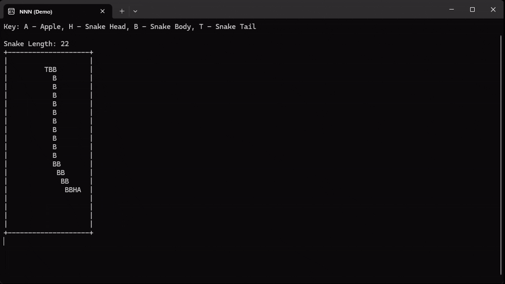

Neural Network Notions
GitHub RepositoryFun Fact
The project has gone through two complete refactors and two major refactors: switching from the original basic backpropagation system to number-based autograd-style automatic differentiation, replacing individual numbers with tensors as the base nodes in the autograd graph, restructuring all of the internal tensor logic to eliminate unnecessary memory allocations and incorporate vectorization/parallelization, and rewriting the tensor backend in C++ to improve performance.
Overview
Originally started as a codebase for experimenting with small custom neural networks, Neural Network Notions has evolved into being a full-scale neural network library. The project strictly does not use any external libraries, relying solely on the C# and C++ standard libraries and from-scratch implementations. The architecture is based on the PyTorch autograd system to support advanced neural network operations in real-time via automatic differentiation. Recent successes include successfully training a convolutional model for the MNIST dataset of handwritten digits, and agents to play Tic-Tac-Toe and Snake. As of now, my future plans include adding support for recursive neural networks and proximal policy optimization (PPO) training.


The most advanced capabilities of the current Neural Network Notions version include using Deep Q-Network (DQN) training to train agents to operate in environments with discrete action spaces. The library provides a standard environment class and API which can be extended to train neural networks in nearly any discrete environment. I have developed the custom .nnn file format for saving and loading trained models, with the codebase including a specially-developed file viewer for reading the format. Neural Network Nonsense also includes a significant amount of standard neural network and training functions, such as a variety of activation functions (hyperbolic tangent, rectified linear unit, etc.) and multiple cost functions (mean squared error, pseudo-huber loss, etc.). The size of the neural network required to effectively play... Tic-Tac-Toe... was too large for the original number-based autograd implementation to handle at any reasonable speed, prompting me to rewrite the system to operate at the tensor level. After achieving a proof of concept and seeing the performance increase from the tensor system, I also decided to restructure the internal tensor logic to use as few memory allocations as possible and leverage C#'s Single Instruction, Multiple Data (SIMD) vectorization along with parallelization via CPU multithreading to improve the performance even further. As a result, Neural Network Nonsense has become my most advanced and long-running project.
Fun Fact
For the sake of completeness, the library includes a number of operations and their respective derivative formulas which are very unlikely to ever be used in the context of neural networks. This includes a logarithm implementation which accepts a tensor as both its argument and base, along with the partial derivative equations in respect to both the argument and base.